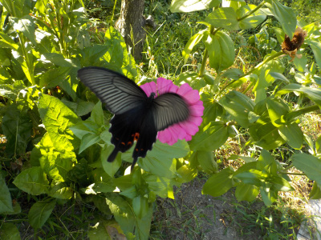
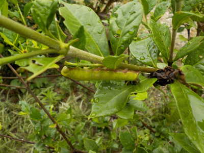
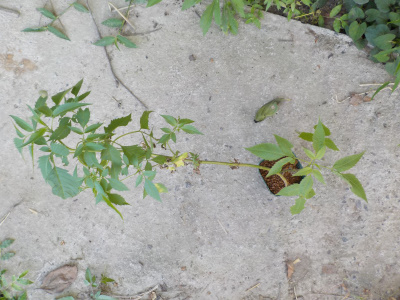
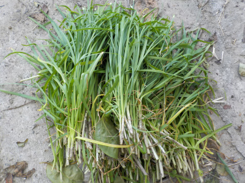
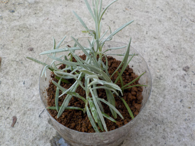
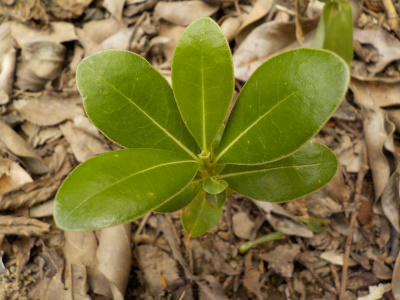
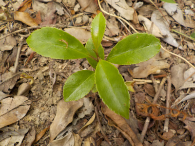
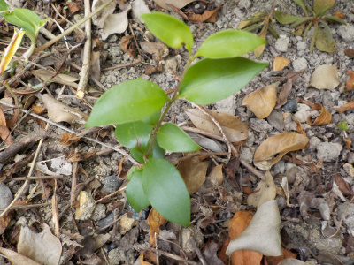
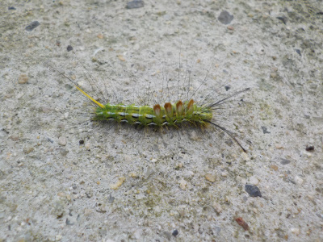

近頃大きめの蝶をよく見ます。
2020/08/30

アゲハ蝶サイズの蝶がよく飛んでいます。
幼虫は葉っぱを食べて嫌ですが、成虫は綺麗でいいですね。
蝶って花の近くにいる時は動きがゆっくりなので、網があればすぐに捕まえれそうだと思いました。
捕まえてもしょうがないですが。
2020/08/30

アゲハ蝶サイズの蝶がよく飛んでいます。
幼虫は葉っぱを食べて嫌ですが、成虫は綺麗でいいですね。
蝶って花の近くにいる時は動きがゆっくりなので、網があればすぐに捕まえれそうだと思いました。
捕まえてもしょうがないですが。
2020/08/23

大きい青虫がクチナシの上にいて、目立ったので取りました。
たぶんオオスカシバの幼虫。
成虫が飛んでる姿はかわいいで見たいですが、クチナシの葉っぱを大量に食べられるのは困ります。
2020/08/16

庭にしょろひょろした植物が生えていたので、邪魔なので引っこ抜きました。
抜いたら根っこが少なかったので、鉢に植えても育つかな思いやってみました。
土が少ないので大きくはならないとは思いますが、どうなるでしょうね。
草で寒くなったら枯れるのかな？木で何年も育つのかな？
2020/08/16

ニラを大量に収穫しました。
虫食いとか枯れた葉っぱを取り除いて、花芽も捨てて、洗って、カットして冷凍庫へしまいます。
手間暇かかるので何日か作業します。
2020/08/13

今日は色々挿し木したので、ついでにラベンダーも挿し木しました。
葉っぱの香りを嗅いだんですが、以前だとラベンダーの花を思い浮かべたんですが、今日は線香が思い浮かびました。
感覚が変わったんだな。
2020/08/09



庭木の種が落ちて育った苗です。
何て名前の木かは調べていません。
鉢で育てて盆栽っぽくしようかと思っています。
2020/08/01

ぽとっと落ちてきました。
トゲがあるので毒がありそうです。
調べたらスギドクガって名前でした。名前はドクガですが、毒はないそうです。
あんまり気にしなくてもいいのかな？
過去の日記
夏場の活動は朝と夕です。